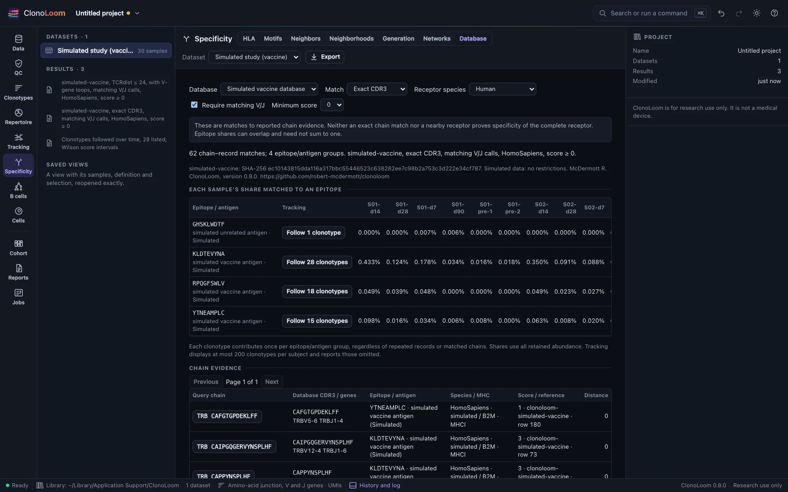
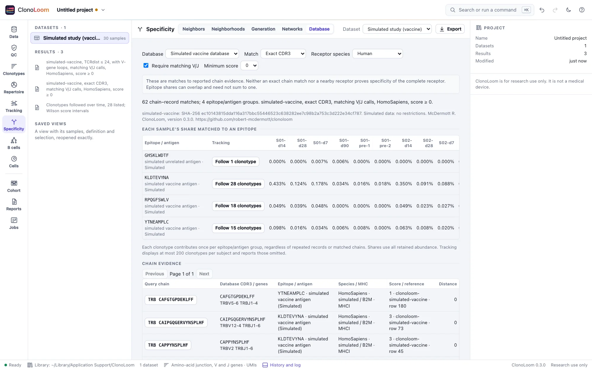

Specificity databases
Specificity’s Database part matches each retained T-cell chain to specificity evidence. Every record keeps its epitope, antigen, receptor species, MHC, score and reference. A match supplies evidence; it does not prove the specificity of a complete receptor.
Choose the database


In Reference data, read VDJdb’s terms and request its download. ClonoLoom pins the 2026-06-03 release and verifies its vdjdb.txt by SHA-256. The historical archive’s license is retained; the catalog also links the publisher’s current CC BY-NC-ND 4.0 terms. The database is never bundled. For practice, generate the vaccine example in Examples and choose Simulated vaccine database.
Choose the matching rule
Choose a receptor species explicitly: human, mouse or rhesus macaque. Only database records of that species and the same chain locus are compared. Choose a minimum evidence score from 0 to 3. The score is reported evidence strength, not a calibrated probability of a correct match.
Exact CDR3 compares whole amino-acid junctions. Optionally require identical, nonempty V and J calls at the clonotype definition’s gene or allele resolution; ambiguous calls must have identical sets of names. Family-only definitions cannot use this option. An allele absent from a record is not invented.
TCRdist radius uses the validated TCRdist method, including its trimmed CDR3s, weights and searched gaps. Include downloaded V-gene loops, or explicitly choose CDR3s alone. A radius of zero is allowed and is not the same as whole-junction identity. Chains missing required loops are excluded and counted; they never silently fall back to CDR3 alone.
Read evidence and shares
Each retained chain is matched separately. Matching one chain does not confirm a paired receptor’s specificity. Evidence retains repeated database rows, row numbers, complex IDs, database genes, MHC, score, method and reference. Complex IDs are provenance, not an assertion that both chains matched. Browse the evidence in pages of 100 or export every row.
Shares group by epitope, antigen and antigen species. Each clonotype contributes its abundance once per group, even if several chains or duplicate records match. The denominator is all retained abundance in that sample under the current definition and filter; empty samples have no share. Groups can overlap, so shares need not sum to one. MHC is reported evidence, not a filter against a sample’s HLA genotype.
Follow an epitope’s clonotypes
Follow clonotypes opens Tracking with the matched IDs and the source result and epitope recorded. Annotate the samples’ subjects and time points first. The existing Tracking limits apply: at most 1,000 listed IDs and 200 displayed clonotypes per subject, with omitted clonotypes reported. Changing the list removes its specificity provenance; changing the matching options creates a new result.
Export and reproduce
Export includes matches.csv and epitopes.csv, with a NOTICE identifying the database, checksum, source, license and citation. Results keep the effective options, definition, filter, database checksum and V-loop checksum when used. Reports cite VDJdb (Shugay et al. 2018, doi:10.1093/nar/gkx760) and the distance method. Remote control provides match_specificity. Analyses exceeding 100 million candidate comparisons or two million evidence matches fail explicitly; reduce the dataset or narrow the options.
Independent checks and coverage
Exact matching row identities agree with pandas for 424 simulated queries and 4,000 maintainer-only queries against 284,546 records of the published release. All 150 simulated sample/epitope shares agree independently. Exact V/J matching finds 602 molecules, of which 598 have the assigned epitope in the truth, compared with 3,498 true response molecules in total. The database contains other donors’ family members: incomplete coverage and chance matches remain visible. No real database records or derived fixtures are distributed with the tests.